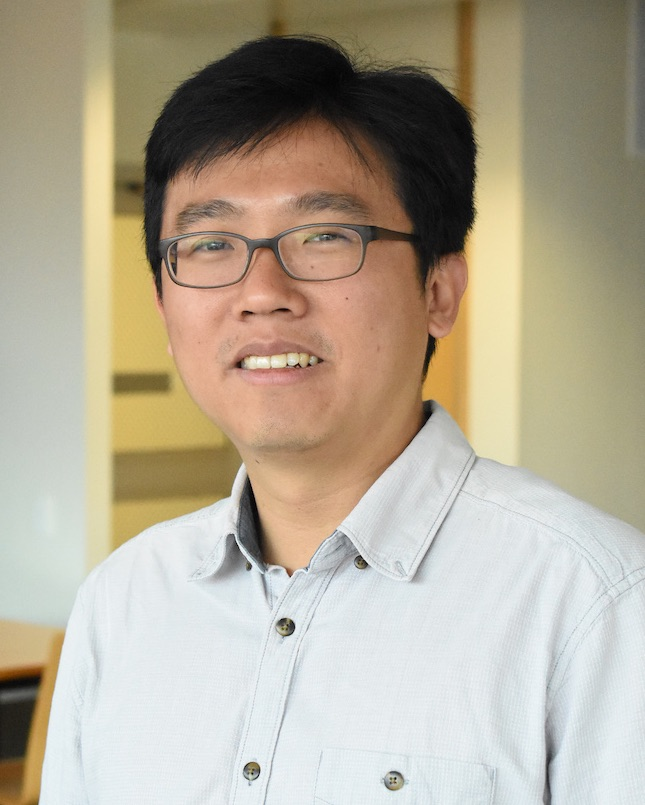
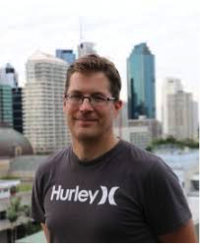
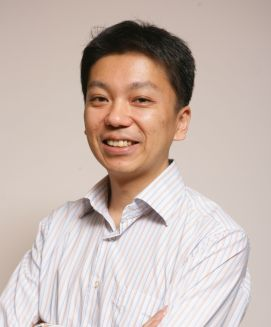
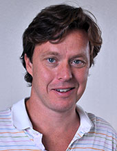
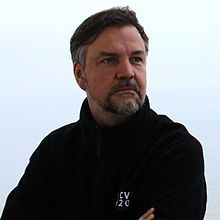
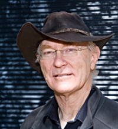

A warm welcome from the organisers!
|
 |
 |
 |
| Tat-Jun Chin | Anders Eriksson | Yasuyuki Matsushita |
We thank our generous sponsors
What is a Shonan Meeting?
Excerpt from NII:
NII Shonan Meetings, following the well-known Dagstuhl Seminars, aim to internationally promote informatics its research, by providing another world's premier venue for world-class scientists, promising young researchers, and practitioners to come together in Asia to exchange their knowledge, discuss their research findings, and explore a cutting-edge informatics topics.
The meetings are held in Shonan Village Center near Tokyo, which offers facilities for conferences, trainings, and lodging in a resort-like setting. The friendly and open atmosphere is to promote communications among participants. The NII Shonan Meetings are managed by National Institute of Informatics (NII), Japan.
Meeting Abstract
Computer vision is concerned with inferring properties of the world from observations in the form of visual images. Such inverse problems typically take shape as optimization problems, that aim to find the best explanation, for the complex visual phenomenon that gave rise to a set of noisy and incomplete visual measurements. For computer vision applications to be successful, the underlying optimization problems must be supported by efficient and dependable solution methods.
The proposed meeting focuses on a broad subclass of computer vision problems called geometric vision problems. Roughly, these are problems that exploit fundamental geometrical constraints arising from the image formation process or physical properties of the scene (e.g., lighting conditions, characteristics of motions), to extract information of the scene (e.g., depth, 3D shape, camera trajectory, object identities) from the given visual data. Example geometric vision problems include structure-from-motion (SfM), simultaneous localization and mapping (SLAM), pose averaging, photometric stereo, and motion segmentation. Methods for solving geometric vision problems underpin many useful applications, such as 3D reconstruction, robot navigation, object recognition/tracking, and computational photography.
Geometric vision is replete with hard optimization problems. By "hard", we mean that the time needed to solve the optimization problems grows quickly with the size of the input data. Take, for example, the task of robustly estimating the planar perspective transformation (a.k.a. homography) from outlier-contaminated point correspondences between two images. Due to the inherent intractability of robust homography estimation, practitioners often rely on simple randomized heuristics to find rough approximate solutions, which neither guarantee optimality nor provide bounds on the approximation error.
The computational difficulty of geometric vision problems is also often compounded by the extremely large size of the input. Take, for example, the task of bundle adjustment, i.e., calculate 3D points and camera poses that are consistent with a set of images of a scene. In the age of big data, the input image set is often obtained by "scraping" Internet photo collections, or by conducting long-term surveillance of a scene using a robot. Such input sizes easily overwhelm traditional computing architectures, and distributed or parallel versions of bundle adjustment must be used.
Technical Themes
The overall theme for the proposed meeting is recent theoretical and algorithmic advances on optimization problems in geometric vision. These include, but are not restricted to:
- Solvability and approximability of geometric vision problems.
- Duality in geometric vision problems.
- Global optimization algorithms for geometric vision.
- Approximate algorithms including randomized methods.
- Distributed and incremental algorithms for geometric vision problems.
- Machine learning and deep learning in geometric vision problems.
It is hoped that the meeting will contribute towards promoting the value of basic algorithmic research in computer vision, especially in the area of geometric optimization. From a more practical standpoint, and as alluded to above, geometric vision problems underpin some of the most important capabilities (e.g., 3D sensing and navigation, object recognition and tracking) that support intelligent machines. Therefore, the outcomes of the proposed meeting could have significant impact on some of the most important technological developments, such as self-driving cars, intelligent domestic robots, and smart manufacturing - developments that are already driving the economic growth in developed and developing countries alike.
Keynote Speakers
|
 |
 |
 |
| Fredrik Kahl | Frank Dellaert | Richard Hartley |
Participants
| Alessio Del Bue | Italian Institute of Technology |
| Alexander Bronstein | Technion, Israel Institute of Technology |
| Ali Bab-Hadiashar | RMIT University |
| Anders Eriksson | Queensland University of Technology |
| Carl Olsson | Chalmers Institute of Technology |
| Christopher Zach | Chalmers University of Technology |
| Danda Pani Paudel | ETH Zurich |
| Daniel Lin Wen Yan | Osaka University |
| David Suter | Edith Cowan University |
| Florian Bernard | Max-Planck-Institute for Informatics |
| Frank Dellaert | Georgia Tech |
| Fredrik Kahl | Chalmers University of Technology |
| Gim Hee Lee | National University of Singapore |
| Hongdong Li | Australian National University |
| Jamie Sherrah | Digital Animal Interactive Inc. (FTSY) |
| Jesus Briales | |
| Kenichi Kanatani | Okayama University |
| Laurent Kneip | Shanghai Tech |
| Luca Carlone | MIT |
| Michael Brown | York University |
| Michael Waechter | Osaka University |
| Michael Bronstein | University of Italian Switzerland, Intel, Imperial |
| Ping Tan | Simon Fraser University |
| Richard Hartley | Australian National University |
| Robert Mahony | Australian National University |
| Simon Lucey | Carnegie Mellon University |
| Sudipta Sinha | Microsoft Research |
| Tarek Hamel | Universite Cote d'Azur |
| Tat-Jun Chin | The University of Adelaide |
| Viorela Ila | University of Sydney |
| Yasuyuki Matsushita | Osaka university |
| Yinqiang Zheng | NII |
| Yongduek Seo | Sogang University |
Program
Contact the organisers if there are any issues with the program.
Sunday 27 January
| 1500 onwards | Check-in |
| 1900-2100 | Welcome banquet |
Monday 28 January
| 0730-0900 | Breakfast |
| 0900-0915 | Welcoming address - Tat-Jun Chin, Anders Eriksson, Yasuyuki Matsushita |
| 0915-1000 | Keynote 1 - Fredrik Kahl |
| 1000-1015 | Michael Brown |
| 1015-1030 | Christopher Zach |
| 1030-1100 | Coffee break |
| 1100-1115 | Robert Mahony |
| 1115-1130 | Yongduek Seo |
| 1130-1200 | Breakout session 1 |
| 1200-1330 | Lunch |
| 1330-1345 | Sudipta Sinha |
| 1345-1400 | Yinqiang Zheng |
| 1400-1415 | Michael Waechter |
| 1415-1430 | Viorela Ila |
| 1430-1500 | Breakout session 2 |
| 1500-1530 | Coffee break |
| 1530-1545 | Hongdong Li |
| 1545-1600 | David Suter |
| 1600-1630 | Breakout session 3 |
| 1630-1800 | Free time |
| 1800-1930 | Dinner |
Tuesday 29 January
| 0730-0900 | Breakfast |
| 0900-0915 | Program briefing |
| 0915-1000 | Keynote 2 - Frank Dellaert |
| 1000-1015 | Ping Tan |
| 1015-1030 | Jamie Sherrah |
| 1030-1100 | Cofee break |
| 1100-1115 | Ali Bab-Hadiashar |
| 1115-1130 | Gim Hee Lee |
| 1130-1200 | Breakout session 4 |
| 1200-1315 | Lunch |
| 1315-1330 | Group photo |
| 1330-1345 | Kenichi Kanatani |
| 1345-1400 | Jesus Briales |
| 1400-1415 | Carl Olsson |
| 1415-1445 | Breakout session 5 |
| 1445-1515 | Coffee break |
| 1515-1530 | Florian Bernard |
| 1530-1545 | Alessio Del Bue |
| 1545-1600 | Danda Pani Paudel |
| 1600-1630 | Breakout session 6 |
| 1630-1800 | Free time |
| 1800-1930 | Dinner |
Wednesday 30 January
| 0730-0900 | Breakfast |
| 0900-0915 | Program briefing |
| 0915-1000 | Keynote 3 - Richard Hartley |
| 1000-1015 | Tarek Hamel |
| 1015-1030 | Laurent Kneip |
| 1030-1100 | Coffee break |
| 1100-1115 | Simon Lucey |
| 1115-1130 | Luca Carlone |
| 1130-1200 | Breakout session 7 |
| 1200-1330 | Lunch |
| 1300-2045 | Excursion and dinner |
Thursday 31 January
| 0730-0930 | Breakfast and check-out |
| 0930-0945 | Yasuyuki Matsushita |
| 0945-1000 | Anders Eriksson |
| 1000-1015 | Tat-Jun Chin |
| 1015-1100 | Coffee break |
| 1100-1130 | Breakout session 8 |
| 1130-1200 | Conclusion and wrap-up |
| 1200-1330 | Lunch and end of meeting |